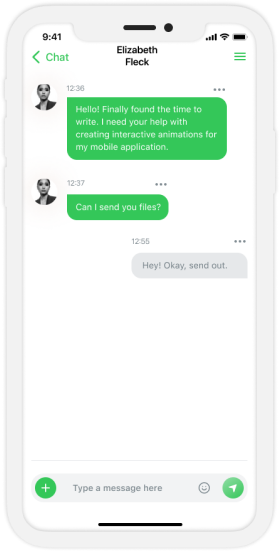
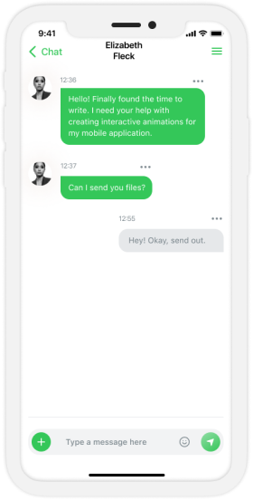

타겟층 차별화
전 세계적으로 한류가 대세인 지금, 한국 여행에 관심이 있는 외국인을 타겟으로 정함으로, 틈새시장 개척 및 확실한 수요층을 확보하였습니다.
한국으로의 여행을 잇다.
Kink는 한국으로 여행을 계획하고 있거나,
국내에 거주하고 있는 외국인을 위한 여행 서비스 앱입니다.

전 세계적으로 한류가 대세인 지금, 한국 여행에 관심이 있는 외국인을 타겟으로 정함으로, 틈새시장 개척 및 확실한 수요층을 확보하였습니다.
봄, 여름, 가을, 겨울 4계절이 뚜렷한 한국의 특별한 환경을 잘 반영하여, 각 계절에 맞는 한국 여행지에 대한 최신 정보를 제공합니다.
인증이 완료된 외국인 한국 여행객이 실제로 경험한 생생한 후기와 채팅 등 다른 여행앱과 차별화된 새롭고 유익한 정보를 제공합니다.
각 지역의 음식, 숙박, 교통 등 여행과 관련된 모든 업종의 소상공인들과 협력하여 침체된 지역경제의 활성화를 촉진합니다.
여행하면 떠오르는 산과 바다, 하늘을 상징하는 초록색과 하늘색을 바탕으로, Korea의 K와 연결의 의미를 형상화한 연결 고리를 더하여 로고를 디자인 했습니다.
English - SF Pro Display / SF Pro Text
ABCDEFGHIJKLMNOPQRSTUVWXYZ
abcdefghijklmnopqrstuvwxyz
0123456789 !@#$%^&*()-=
Kink 자체 회원가입은 물론, 자주 사용하는 SNS계정과 연동할 수 있어 쉽고 간편한 회원가입과 로그인을 할 수 있습니다.
메인화면에 4계절별로 적합한 여행지, 인기 리뷰, 접속한 지역 주변의 맛집 목록을 보기 편한 슬라이드 형태로 구현했고, 하단에 내비게이션 바, 우측 상단에 드로어를 배치하므로 사용자의 편의성을 높혔습니다.
인기별 유명 관광지별로 분류하여 할인 정보를 빠르게 접근할 수 있습니다.
각 관광지의 패키지 및 어트랙션 등 Kink만의 할인 혜택을 누려보세요.
각 지역의 여행과 관련된 모든 업종의 소상공인들과 협력하여 오직 Kink에서만 누릴 수 있는 다양한 할인 혜택을 제공합니다.
검증된 외국인 한국 여행객이 실제 경험한 리뷰를 지역과 도시별로 분류함으로써, 사용자가 여행하고자 하는 지역에 대한 적합한 정보를 빠르게 볼 수 있도록 했습니다.

해당 도시의 인기, 최신별 리뷰를 정렬해 줍니다.

리뷰를 작성한 곳의 정확한 위치를 지도에 표시해 주고교통정보와 연결되도록 하여 편의성을 높였습니다.
 

친구의 상태가 온라인 / 자리비움 / 오프라인인지 확인할 수 있습니다.
GPS를 기반으로 사용자가 위치한 지역 근처에 있는 다른 사용자를 만나서 친구가 될 수 있습니다. 추가한 친구는 사용자의 편의에 맞게 리스트로 정리할 수 있고, 친구의 접속 상태를 실시간으로 확인할 수 있습니다.
Google Map의 방대한 정보를 기반으로 하여 사용자의 위치를 정확하게 파악할 수 있고, Kink의 사용자가 직접 작성한 리뷰가 지도에 표시되어 원하는 목적지를 쉽게 찾아갈 수 있습니다.
Kink에서 사용자가 작성한 리뷰가 있는 장소를 지도에 표시하여 더욱 찾아가기 쉽습니다.

Copyright © 2021 by Kink All Rights Reserved.